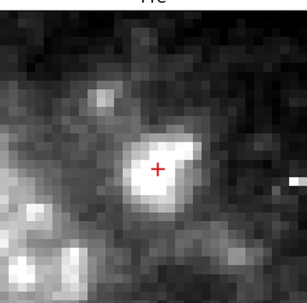
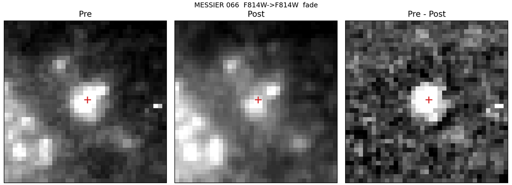
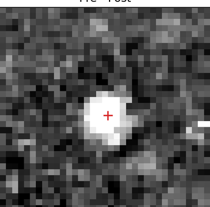

Strong export-failure-like
MESSIER_066_branch_0002
MESSIER 066 | rank 1 | confidence LOW
Best current read: a branch-selected export-failure / underluminous-collapse lead that survives the strict detector controls. Multi-pair same-location support is already present, and late-time return is weak.



Observation context
- Representative pair:
MESSIER 066::hst_13477_03_wfc3_uvis_f814w_ic8503::hst_15654_22_wfc3_uvis_f814w_idxr22 - Filters:
F814W, F555W, F438W - Instruments:
WFC3/UVIS - Date window:
2013-10-29 to 2019-11-11 - Sky position:
RA 170.07041,Dec 12.97975
What this most likely is
Best current read: a branch-selected export-failure / underluminous-collapse lead that survives the strict detector controls. Multi-pair same-location support is already present, and late-time return is weak.
This page is ranking branch-aware export-failure coherence under strict detector controls. It is not a claim of confirmed failed-supernova status.
| Branch rank | 1 / 109 |
|---|---|
| Rank score | 1.000 |
| Export-failure score | 0.834 |
| Intermediate-branch score | 0.875 |
| Dust-survivor score | 0.165 |
| Systematic risk | 0.068 |
| Detector confidence | 0.804 |
| Registration confidence | 0.901 |
| Subtraction cleanliness | 0.974 |
| Coverage completeness | 1.000 |
| Forced-photometry coherence | 0.806 |
| Fade persistence | 0.667 |
| Rebrightening penalty | 0.100 |
| Artifact penalty | 0.030 |
| Forced ratio median R | 0.414 |
| Forced ratio IQR | 0.043 |
| Max diff significance | 60.203 |
| Forced baseline span | 2203.7 d |
| Support pairs | 4 |
| Support filters | 3 |
| Members in cluster | 4 |
| PASS members | 0 |
| Forced measured pairs | 6 / 6 |
| Partial fraction | 83.3% |
| Severe fraction | 0.0% |
| Return fraction | 16.7% |
| Late-fade fraction | 100.0% |
| Late-return fraction | 0.0% |
| Median registration residual | 0.153 px |
| Centroid scatter | 0.015 arcsec |
| Pair stable fraction | 93.2% |
Reason codes
BENCHMARK_GUARDRAIL_OKDETECTOR_SIGNAL_STRONGFORCED_COHERENCE_STRONGLONG_BASELINE_SUPPORTMULTI_PAIR_LOCALIZATIONPARTIAL_SUPPRESSION_PATTERNPERSISTENT_FADE_SUPPORT
Warning flags
- None